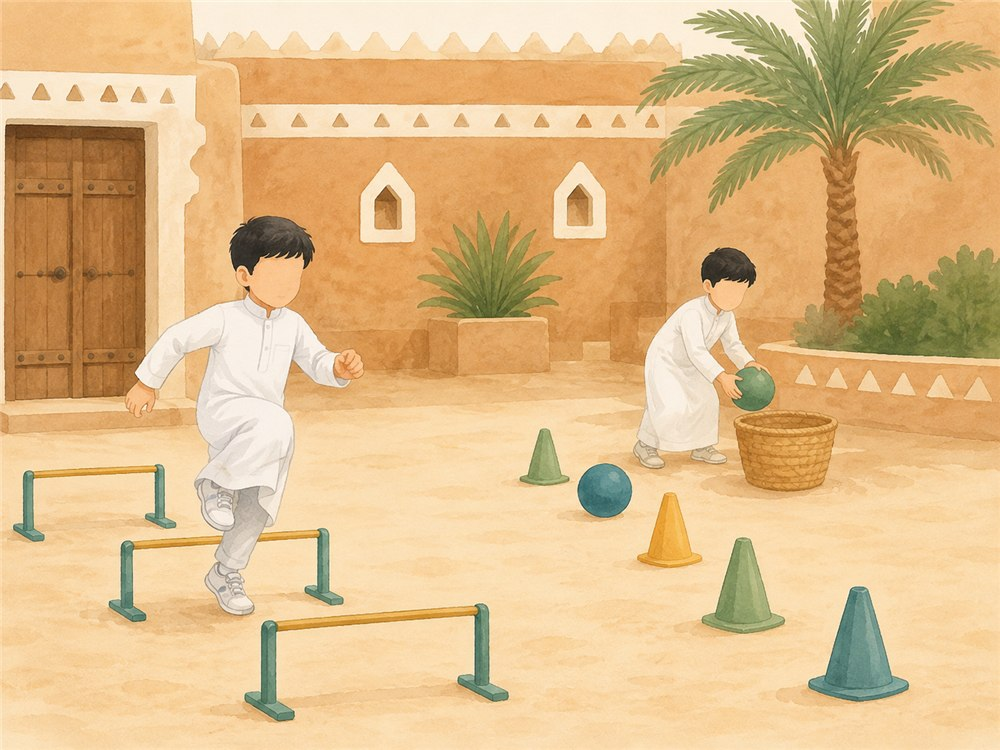
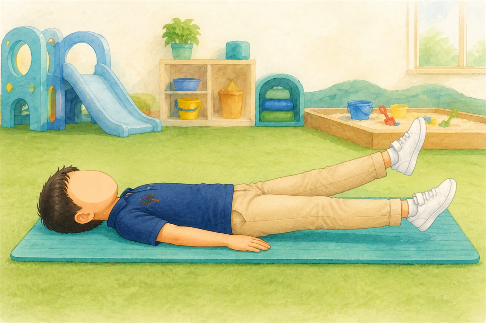
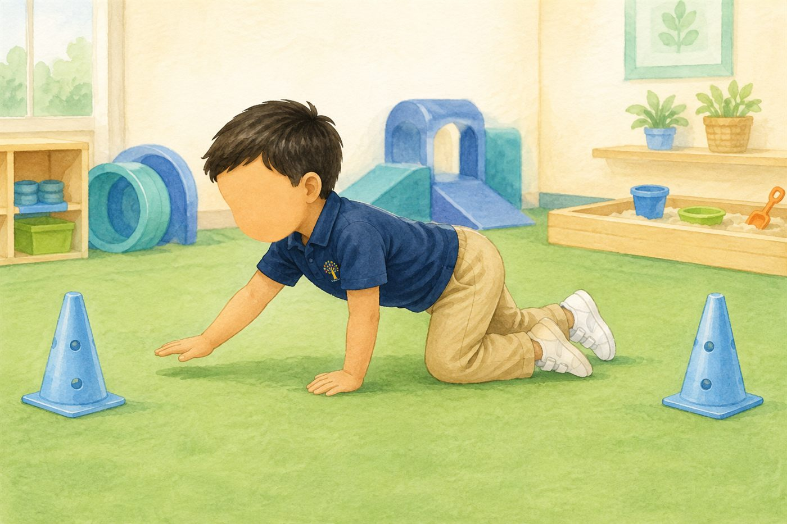
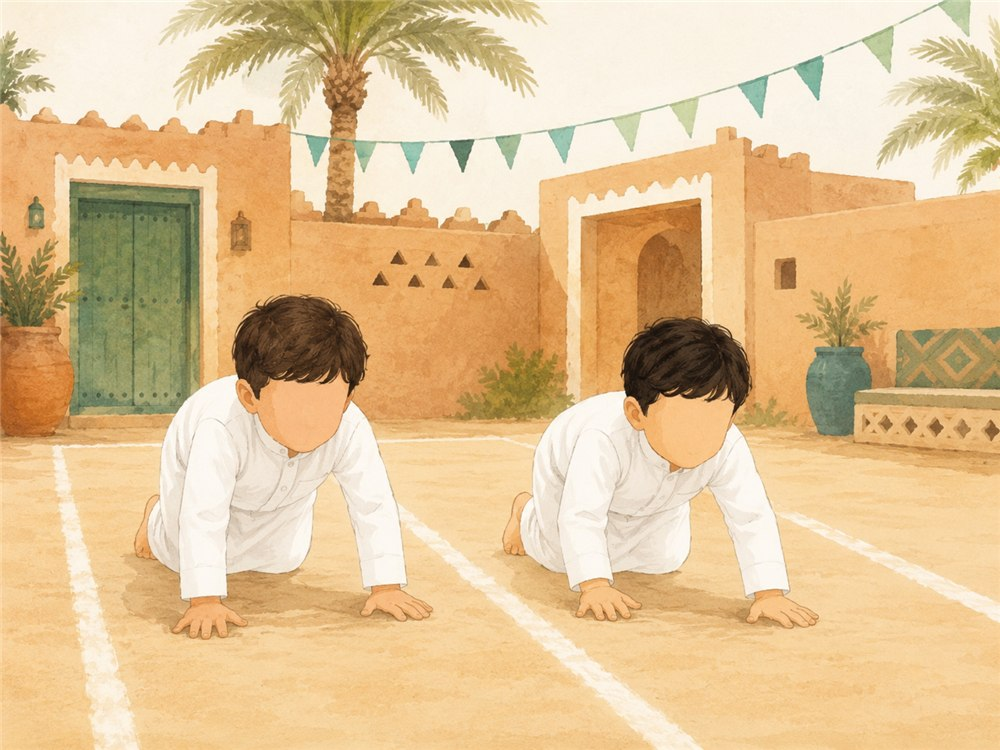
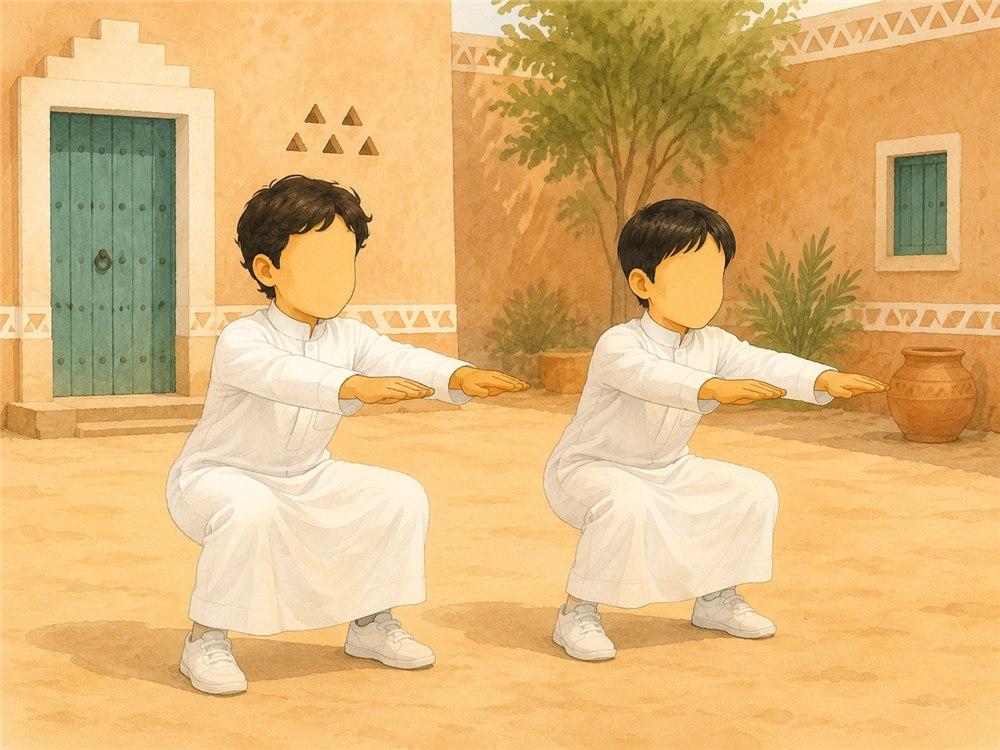
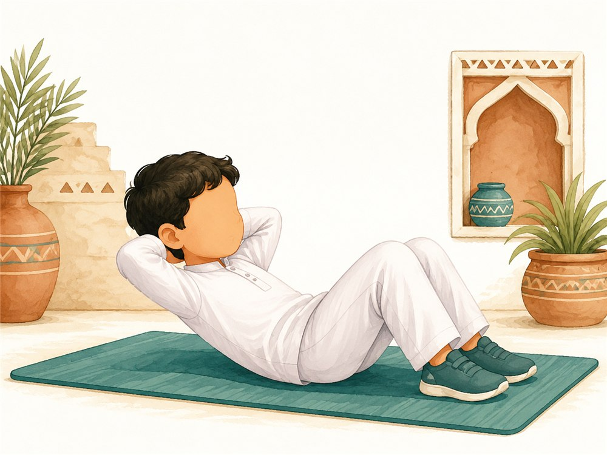
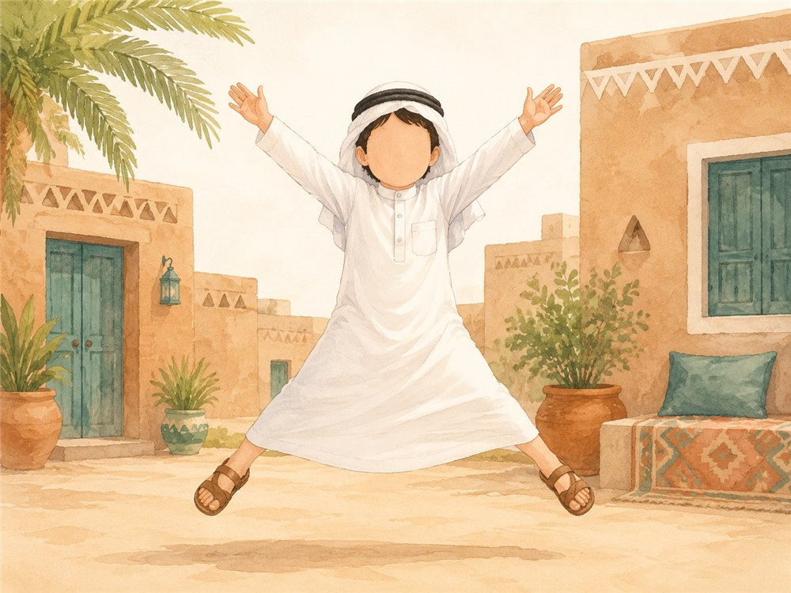

الأسبوع الحادي عشر · جمادى الأولى · المرحلة التمهيدية
وحدة العائلة
وحدة متكاملة تغرس محبة العائلة وآدابها وبرّ الوالدين. تضمّ سبع موادّ — علّمني ربي · كتابي المنير · قال رسولي · أحبك ربي · أدب واقتداء · لساني عربي · مهاراتي — إضافةً إلى مركزَي اللغة والرياضيات التطبيقيَّين. اختاري اليوم، ثم المادة لعرض دليل لقائها كاملًا.
الهدف: ربطُ بداية اليوم بذكر الله وتوحيده وشكره — فاللهُ هو الذي يوقظنا ويُعلّم مخلوقاته ويرزقنا — مع بناء عادةٍ حركيةٍ صحّية بحمده سبحانه.
وجبة أولى٣٠ دقيقة
بعد لقاء «علّمني ربي» تُقام الوجبةُ الأولى بآدابها — والطعامُ رزقُ الله نشكره عليه ونقنع بما قسم لنا؛ ويأكل الطفلُ جزءًا من طعامه ويحتفظ بالباقي للوجبة الثانية (لا يُؤكَل كلُّه دفعةً واحدة).
🏅قائد اليوم ومسؤولوه
يُذكّر الأطفالُ بقائد اليوم ومسؤول النظافة ومسؤول الوجبة (بالتناوب يومًا بعد يوم). وعند الاعتراض نذكّر: «هذا رزقُ الله اليومَ لفلان، وادعُ الله أن يرزقك الدور يومًا آخر». «قائدتنا اليوم أختنا المباركة المحبّةُ للعلم فلانة».
🧍الطابور والانتقال
تترأّس القائدةُ الطابور، ثمّ يتوجّهون بهدوءٍ إلى الخلاء لقضاء الحاجة وغسل الأيدي قبل الطعام.
🚻آداب الخلاء (تُفصَّل للأطفال)
يدخل بالرِّجل اليسرى، ويستتر عن الأنظار.
يتنظّف بالماء باليد اليسرى (الاستنجاء)، ولا يستنجي باليمنى.
\x{1F4A1} للمعلمة: نعوّد الطفل تنوّعَ الألوان في طبقه، والمضغَ الهادئ، وعدمَ الإفراط؛ فالطعامُ رزقُ الله نشكره ولا نُسرف فيه: ﴿وَكُلُوا وَاشْرَبُوا وَلَا تُسْرِفُوا﴾ [الأعراف: ٣١].
فترةُ لعبٍ حركيّ منظّم داخل القاعة — نشكر الله على نعمة الجسم والحركة، ونلعب بأمانٍ وتعاونٍ وبالتناوب.
شُكرُ النعمة
«الحمد لله على نعمة الجسم والحركة والعافية»
🔺مسار الأقماع (رشاقة)
يتنقّل الطفل بين الأقماع الملوّنة قفزًا ولفًّا ومشيًا متعرّجًا؛ لتنمية الرشاقة والتناسق الحركيّ.
⚖️عارضة التوازن
يمشي على العارضة المنخفضة بثباتٍ وخطواتٍ متّزنة؛ لتنمية التوازن والثقة.
🛝التسلّق والزحليقة والنفق
يتسلّق الجهاز ويمرّ بالنفق وينزلق من الزحليقة بأمان؛ لتقوية العضلات الكبرى والجرأة المنضبطة.
🏠بيت اللعب التمثيلي
لعبٌ إيهاميّ في بيت اللعب (أدوار البيت والضيافة والتعاون)؛ لتنمية الخيال واللغة والتفاعل الاجتماعيّ.
الهدف: تنميةُ المهارات الحركية الكبرى والتوازن والتناسق، وتفريغُ الطاقة، وترسيخُ اللعب الآمن والتعاون والتناوب — مع شكر الله على نعمة الجسم والعافية.
وجبة ثانية٣٠ دقيقة
وقتُ إكمال الوجبة — يأكل الطفلُ الجزءَ المتبقّي من طعامه أو مشروبه بآداب الطعام نفسها، تعويدًا على تنظيم الأكل والقناعة وشُكر الرزق.
🍱لماذا وجبتان؟ تقسيم وجبة الطفل
تُقسَّم وجبةُ الطفل جزئين: جزءٌ في الوجبة الأولى، والباقي (أو المشروب) في الثانية — فلا يأكل كلَّ طعامه دفعةً واحدة؛ لئلّا يُتخَم فيكسل، ويبقى نشيطًا، ويتعوّد تنظيمَ أكله والقناعةَ وشُكرَ الرزق.
دعاء قبل الطعام (التسمية)
بِسْمِ اللَّه
📋آداب الطعام
الأكلُ باليمين وممّا يليه بهدوء؛ ولا يمدّ الطفلُ عينه إلى طعام غيره: «لا تمدّنّ عينيك، واحمدِ اللهَ على رزقه إيّاك اليوم».
🧽بعد الطعام: الترتيب والنظافة
يزيل كلُّ طفلٍ مفرشَه وينظّف مكانه ويعيد كلَّ شيءٍ نظيفًا كما كان، ثمّ يغسل يديه وفمه بعد الأكل.
دعاء بعد الطعام
«الحمد لله الذي أطعمني هذا ورزقنيه من غير حولٍ منّي ولا قوّة»
الهدف: ترسيخُ آداب الطعام وشُكرِ الله على رزقه، وتعويدُ الطفل تنظيمَ أكله والقناعةَ بما قسم الله — فهو الرزّاق وحده.
الهدف: ربطُ بداية اليوم بذكر الله وتوحيده وشكره — فاللهُ هو الذي يوقظنا ويُعلّم مخلوقاته ويرزقنا — مع بناء عادةٍ حركيةٍ صحّية بحمده سبحانه.
وجبة أولى٣٠ دقيقة
بعد لقاء «علّمني ربي» تُقام الوجبةُ الأولى بآدابها — والطعامُ رزقُ الله نشكره عليه ونقنع بما قسم لنا؛ ويأكل الطفلُ جزءًا من طعامه ويحتفظ بالباقي للوجبة الثانية (لا يُؤكَل كلُّه دفعةً واحدة).
🏅قائد اليوم ومسؤولوه
يُذكّر الأطفالُ بقائد اليوم ومسؤول النظافة ومسؤول الوجبة (بالتناوب يومًا بعد يوم). وعند الاعتراض نذكّر: «هذا رزقُ الله اليومَ لفلان، وادعُ الله أن يرزقك الدور يومًا آخر». «قائدتنا اليوم أختنا المباركة المحبّةُ للعلم فلانة».
🧍الطابور والانتقال
تترأّس القائدةُ الطابور، ثمّ يتوجّهون بهدوءٍ إلى الخلاء لقضاء الحاجة وغسل الأيدي قبل الطعام.
🚻آداب الخلاء (تُفصَّل للأطفال)
يدخل بالرِّجل اليسرى، ويستتر عن الأنظار.
يتنظّف بالماء باليد اليسرى (الاستنجاء)، ولا يستنجي باليمنى.
\x{1F4A1} للمعلمة: نعوّد الطفل تنوّعَ الألوان في طبقه، والمضغَ الهادئ، وعدمَ الإفراط؛ فالطعامُ رزقُ الله نشكره ولا نُسرف فيه: ﴿وَكُلُوا وَاشْرَبُوا وَلَا تُسْرِفُوا﴾ [الأعراف: ٣١].
فترةُ لعبٍ حركيّ منظّم داخل القاعة — نشكر الله على نعمة الجسم والحركة، ونلعب بأمانٍ وتعاونٍ وبالتناوب.
شُكرُ النعمة
«الحمد لله على نعمة الجسم والحركة والعافية»
🔺مسار الأقماع (رشاقة)
يتنقّل الطفل بين الأقماع الملوّنة قفزًا ولفًّا ومشيًا متعرّجًا؛ لتنمية الرشاقة والتناسق الحركيّ.
⚖️عارضة التوازن
يمشي على العارضة المنخفضة بثباتٍ وخطواتٍ متّزنة؛ لتنمية التوازن والثقة.
🛝التسلّق والزحليقة والنفق
يتسلّق الجهاز ويمرّ بالنفق وينزلق من الزحليقة بأمان؛ لتقوية العضلات الكبرى والجرأة المنضبطة.
🏠بيت اللعب التمثيلي
لعبٌ إيهاميّ في بيت اللعب (أدوار البيت والضيافة والتعاون)؛ لتنمية الخيال واللغة والتفاعل الاجتماعيّ.
الهدف: تنميةُ المهارات الحركية الكبرى والتوازن والتناسق، وتفريغُ الطاقة، وترسيخُ اللعب الآمن والتعاون والتناوب — مع شكر الله على نعمة الجسم والعافية.
وجبة ثانية٣٠ دقيقة
وقتُ إكمال الوجبة — يأكل الطفلُ الجزءَ المتبقّي من طعامه أو مشروبه بآداب الطعام نفسها، تعويدًا على تنظيم الأكل والقناعة وشُكر الرزق.
🍱لماذا وجبتان؟ تقسيم وجبة الطفل
تُقسَّم وجبةُ الطفل جزئين: جزءٌ في الوجبة الأولى، والباقي (أو المشروب) في الثانية — فلا يأكل كلَّ طعامه دفعةً واحدة؛ لئلّا يُتخَم فيكسل، ويبقى نشيطًا، ويتعوّد تنظيمَ أكله والقناعةَ وشُكرَ الرزق.
دعاء قبل الطعام (التسمية)
بِسْمِ اللَّه
📋آداب الطعام
الأكلُ باليمين وممّا يليه بهدوء؛ ولا يمدّ الطفلُ عينه إلى طعام غيره: «لا تمدّنّ عينيك، واحمدِ اللهَ على رزقه إيّاك اليوم».
🧽بعد الطعام: الترتيب والنظافة
يزيل كلُّ طفلٍ مفرشَه وينظّف مكانه ويعيد كلَّ شيءٍ نظيفًا كما كان، ثمّ يغسل يديه وفمه بعد الأكل.
دعاء بعد الطعام
«الحمد لله الذي أطعمني هذا ورزقنيه من غير حولٍ منّي ولا قوّة»
الهدف: ترسيخُ آداب الطعام وشُكرِ الله على رزقه، وتعويدُ الطفل تنظيمَ أكله والقناعةَ بما قسم الله — فهو الرزّاق وحده.
الهدف: ربطُ بداية اليوم بذكر الله وتوحيده وشكره — فاللهُ هو الذي يوقظنا ويُعلّم مخلوقاته ويرزقنا — مع بناء عادةٍ حركيةٍ صحّية بحمده سبحانه.
وجبة أولى٣٠ دقيقة
بعد لقاء «علّمني ربي» تُقام الوجبةُ الأولى بآدابها — والطعامُ رزقُ الله نشكره عليه ونقنع بما قسم لنا؛ ويأكل الطفلُ جزءًا من طعامه ويحتفظ بالباقي للوجبة الثانية (لا يُؤكَل كلُّه دفعةً واحدة).
🏅قائد اليوم ومسؤولوه
يُذكّر الأطفالُ بقائد اليوم ومسؤول النظافة ومسؤول الوجبة (بالتناوب يومًا بعد يوم). وعند الاعتراض نذكّر: «هذا رزقُ الله اليومَ لفلان، وادعُ الله أن يرزقك الدور يومًا آخر». «قائدتنا اليوم أختنا المباركة المحبّةُ للعلم فلانة».
🧍الطابور والانتقال
تترأّس القائدةُ الطابور، ثمّ يتوجّهون بهدوءٍ إلى الخلاء لقضاء الحاجة وغسل الأيدي قبل الطعام.
🚻آداب الخلاء (تُفصَّل للأطفال)
يدخل بالرِّجل اليسرى، ويستتر عن الأنظار.
يتنظّف بالماء باليد اليسرى (الاستنجاء)، ولا يستنجي باليمنى.
\x{1F4A1} للمعلمة: نعوّد الطفل تنوّعَ الألوان في طبقه، والمضغَ الهادئ، وعدمَ الإفراط؛ فالطعامُ رزقُ الله نشكره ولا نُسرف فيه: ﴿وَكُلُوا وَاشْرَبُوا وَلَا تُسْرِفُوا﴾ [الأعراف: ٣١].
فترةُ لعبٍ حركيّ منظّم داخل القاعة — نشكر الله على نعمة الجسم والحركة، ونلعب بأمانٍ وتعاونٍ وبالتناوب.
شُكرُ النعمة
«الحمد لله على نعمة الجسم والحركة والعافية»
🔺مسار الأقماع (رشاقة)
يتنقّل الطفل بين الأقماع الملوّنة قفزًا ولفًّا ومشيًا متعرّجًا؛ لتنمية الرشاقة والتناسق الحركيّ.
⚖️عارضة التوازن
يمشي على العارضة المنخفضة بثباتٍ وخطواتٍ متّزنة؛ لتنمية التوازن والثقة.
🛝التسلّق والزحليقة والنفق
يتسلّق الجهاز ويمرّ بالنفق وينزلق من الزحليقة بأمان؛ لتقوية العضلات الكبرى والجرأة المنضبطة.
🏠بيت اللعب التمثيلي
لعبٌ إيهاميّ في بيت اللعب (أدوار البيت والضيافة والتعاون)؛ لتنمية الخيال واللغة والتفاعل الاجتماعيّ.
الهدف: تنميةُ المهارات الحركية الكبرى والتوازن والتناسق، وتفريغُ الطاقة، وترسيخُ اللعب الآمن والتعاون والتناوب — مع شكر الله على نعمة الجسم والعافية.
وجبة ثانية٣٠ دقيقة
وقتُ إكمال الوجبة — يأكل الطفلُ الجزءَ المتبقّي من طعامه أو مشروبه بآداب الطعام نفسها، تعويدًا على تنظيم الأكل والقناعة وشُكر الرزق.
🍱لماذا وجبتان؟ تقسيم وجبة الطفل
تُقسَّم وجبةُ الطفل جزئين: جزءٌ في الوجبة الأولى، والباقي (أو المشروب) في الثانية — فلا يأكل كلَّ طعامه دفعةً واحدة؛ لئلّا يُتخَم فيكسل، ويبقى نشيطًا، ويتعوّد تنظيمَ أكله والقناعةَ وشُكرَ الرزق.
دعاء قبل الطعام (التسمية)
بِسْمِ اللَّه
📋آداب الطعام
الأكلُ باليمين وممّا يليه بهدوء؛ ولا يمدّ الطفلُ عينه إلى طعام غيره: «لا تمدّنّ عينيك، واحمدِ اللهَ على رزقه إيّاك اليوم».
🧽بعد الطعام: الترتيب والنظافة
يزيل كلُّ طفلٍ مفرشَه وينظّف مكانه ويعيد كلَّ شيءٍ نظيفًا كما كان، ثمّ يغسل يديه وفمه بعد الأكل.
دعاء بعد الطعام
«الحمد لله الذي أطعمني هذا ورزقنيه من غير حولٍ منّي ولا قوّة»
الهدف: ترسيخُ آداب الطعام وشُكرِ الله على رزقه، وتعويدُ الطفل تنظيمَ أكله والقناعةَ بما قسم الله — فهو الرزّاق وحده.
الهدف: ربطُ بداية اليوم بذكر الله وتوحيده وشكره — فاللهُ هو الذي يوقظنا ويُعلّم مخلوقاته ويرزقنا — مع بناء عادةٍ حركيةٍ صحّية بحمده سبحانه.
وجبة أولى٣٠ دقيقة
بعد لقاء «علّمني ربي» تُقام الوجبةُ الأولى بآدابها — والطعامُ رزقُ الله نشكره عليه ونقنع بما قسم لنا؛ ويأكل الطفلُ جزءًا من طعامه ويحتفظ بالباقي للوجبة الثانية (لا يُؤكَل كلُّه دفعةً واحدة).
🏅قائد اليوم ومسؤولوه
يُذكّر الأطفالُ بقائد اليوم ومسؤول النظافة ومسؤول الوجبة (بالتناوب يومًا بعد يوم). وعند الاعتراض نذكّر: «هذا رزقُ الله اليومَ لفلان، وادعُ الله أن يرزقك الدور يومًا آخر». «قائدتنا اليوم أختنا المباركة المحبّةُ للعلم فلانة».
🧍الطابور والانتقال
تترأّس القائدةُ الطابور، ثمّ يتوجّهون بهدوءٍ إلى الخلاء لقضاء الحاجة وغسل الأيدي قبل الطعام.
🚻آداب الخلاء (تُفصَّل للأطفال)
يدخل بالرِّجل اليسرى، ويستتر عن الأنظار.
يتنظّف بالماء باليد اليسرى (الاستنجاء)، ولا يستنجي باليمنى.
\x{1F4A1} للمعلمة: نعوّد الطفل تنوّعَ الألوان في طبقه، والمضغَ الهادئ، وعدمَ الإفراط؛ فالطعامُ رزقُ الله نشكره ولا نُسرف فيه: ﴿وَكُلُوا وَاشْرَبُوا وَلَا تُسْرِفُوا﴾ [الأعراف: ٣١].
فترةُ لعبٍ حركيّ منظّم داخل القاعة — نشكر الله على نعمة الجسم والحركة، ونلعب بأمانٍ وتعاونٍ وبالتناوب.
شُكرُ النعمة
«الحمد لله على نعمة الجسم والحركة والعافية»
🔺مسار الأقماع (رشاقة)
يتنقّل الطفل بين الأقماع الملوّنة قفزًا ولفًّا ومشيًا متعرّجًا؛ لتنمية الرشاقة والتناسق الحركيّ.
⚖️عارضة التوازن
يمشي على العارضة المنخفضة بثباتٍ وخطواتٍ متّزنة؛ لتنمية التوازن والثقة.
🛝التسلّق والزحليقة والنفق
يتسلّق الجهاز ويمرّ بالنفق وينزلق من الزحليقة بأمان؛ لتقوية العضلات الكبرى والجرأة المنضبطة.
🏠بيت اللعب التمثيلي
لعبٌ إيهاميّ في بيت اللعب (أدوار البيت والضيافة والتعاون)؛ لتنمية الخيال واللغة والتفاعل الاجتماعيّ.
الهدف: تنميةُ المهارات الحركية الكبرى والتوازن والتناسق، وتفريغُ الطاقة، وترسيخُ اللعب الآمن والتعاون والتناوب — مع شكر الله على نعمة الجسم والعافية.
وجبة ثانية٣٠ دقيقة
وقتُ إكمال الوجبة — يأكل الطفلُ الجزءَ المتبقّي من طعامه أو مشروبه بآداب الطعام نفسها، تعويدًا على تنظيم الأكل والقناعة وشُكر الرزق.
🍱لماذا وجبتان؟ تقسيم وجبة الطفل
تُقسَّم وجبةُ الطفل جزئين: جزءٌ في الوجبة الأولى، والباقي (أو المشروب) في الثانية — فلا يأكل كلَّ طعامه دفعةً واحدة؛ لئلّا يُتخَم فيكسل، ويبقى نشيطًا، ويتعوّد تنظيمَ أكله والقناعةَ وشُكرَ الرزق.
دعاء قبل الطعام (التسمية)
بِسْمِ اللَّه
📋آداب الطعام
الأكلُ باليمين وممّا يليه بهدوء؛ ولا يمدّ الطفلُ عينه إلى طعام غيره: «لا تمدّنّ عينيك، واحمدِ اللهَ على رزقه إيّاك اليوم».
🧽بعد الطعام: الترتيب والنظافة
يزيل كلُّ طفلٍ مفرشَه وينظّف مكانه ويعيد كلَّ شيءٍ نظيفًا كما كان، ثمّ يغسل يديه وفمه بعد الأكل.
دعاء بعد الطعام
«الحمد لله الذي أطعمني هذا ورزقنيه من غير حولٍ منّي ولا قوّة»
الهدف: ترسيخُ آداب الطعام وشُكرِ الله على رزقه، وتعويدُ الطفل تنظيمَ أكله والقناعةَ بما قسم الله — فهو الرزّاق وحده.
الهدف: ربطُ بداية اليوم بذكر الله وتوحيده وشكره — فاللهُ هو الذي يوقظنا ويُعلّم مخلوقاته ويرزقنا — مع بناء عادةٍ حركيةٍ صحّية بحمده سبحانه.
وجبة أولى٣٠ دقيقة
بعد لقاء «علّمني ربي» تُقام الوجبةُ الأولى بآدابها — والطعامُ رزقُ الله نشكره عليه ونقنع بما قسم لنا؛ ويأكل الطفلُ جزءًا من طعامه ويحتفظ بالباقي للوجبة الثانية (لا يُؤكَل كلُّه دفعةً واحدة).
🏅قائد اليوم ومسؤولوه
يُذكّر الأطفالُ بقائد اليوم ومسؤول النظافة ومسؤول الوجبة (بالتناوب يومًا بعد يوم). وعند الاعتراض نذكّر: «هذا رزقُ الله اليومَ لفلان، وادعُ الله أن يرزقك الدور يومًا آخر». «قائدتنا اليوم أختنا المباركة المحبّةُ للعلم فلانة».
🧍الطابور والانتقال
تترأّس القائدةُ الطابور، ثمّ يتوجّهون بهدوءٍ إلى الخلاء لقضاء الحاجة وغسل الأيدي قبل الطعام.
🚻آداب الخلاء (تُفصَّل للأطفال)
يدخل بالرِّجل اليسرى، ويستتر عن الأنظار.
يتنظّف بالماء باليد اليسرى (الاستنجاء)، ولا يستنجي باليمنى.
\x{1F4A1} للمعلمة: نعوّد الطفل تنوّعَ الألوان في طبقه، والمضغَ الهادئ، وعدمَ الإفراط؛ فالطعامُ رزقُ الله نشكره ولا نُسرف فيه: ﴿وَكُلُوا وَاشْرَبُوا وَلَا تُسْرِفُوا﴾ [الأعراف: ٣١].
فترةُ لعبٍ حركيّ منظّم داخل القاعة — نشكر الله على نعمة الجسم والحركة، ونلعب بأمانٍ وتعاونٍ وبالتناوب.
شُكرُ النعمة
«الحمد لله على نعمة الجسم والحركة والعافية»
🔺مسار الأقماع (رشاقة)
يتنقّل الطفل بين الأقماع الملوّنة قفزًا ولفًّا ومشيًا متعرّجًا؛ لتنمية الرشاقة والتناسق الحركيّ.
⚖️عارضة التوازن
يمشي على العارضة المنخفضة بثباتٍ وخطواتٍ متّزنة؛ لتنمية التوازن والثقة.
🛝التسلّق والزحليقة والنفق
يتسلّق الجهاز ويمرّ بالنفق وينزلق من الزحليقة بأمان؛ لتقوية العضلات الكبرى والجرأة المنضبطة.
🏠بيت اللعب التمثيلي
لعبٌ إيهاميّ في بيت اللعب (أدوار البيت والضيافة والتعاون)؛ لتنمية الخيال واللغة والتفاعل الاجتماعيّ.
الهدف: تنميةُ المهارات الحركية الكبرى والتوازن والتناسق، وتفريغُ الطاقة، وترسيخُ اللعب الآمن والتعاون والتناوب — مع شكر الله على نعمة الجسم والعافية.
وجبة ثانية٣٠ دقيقة
وقتُ إكمال الوجبة — يأكل الطفلُ الجزءَ المتبقّي من طعامه أو مشروبه بآداب الطعام نفسها، تعويدًا على تنظيم الأكل والقناعة وشُكر الرزق.
🍱لماذا وجبتان؟ تقسيم وجبة الطفل
تُقسَّم وجبةُ الطفل جزئين: جزءٌ في الوجبة الأولى، والباقي (أو المشروب) في الثانية — فلا يأكل كلَّ طعامه دفعةً واحدة؛ لئلّا يُتخَم فيكسل، ويبقى نشيطًا، ويتعوّد تنظيمَ أكله والقناعةَ وشُكرَ الرزق.
دعاء قبل الطعام (التسمية)
بِسْمِ اللَّه
📋آداب الطعام
الأكلُ باليمين وممّا يليه بهدوء؛ ولا يمدّ الطفلُ عينه إلى طعام غيره: «لا تمدّنّ عينيك، واحمدِ اللهَ على رزقه إيّاك اليوم».
🧽بعد الطعام: الترتيب والنظافة
يزيل كلُّ طفلٍ مفرشَه وينظّف مكانه ويعيد كلَّ شيءٍ نظيفًا كما كان، ثمّ يغسل يديه وفمه بعد الأكل.
دعاء بعد الطعام
«الحمد لله الذي أطعمني هذا ورزقنيه من غير حولٍ منّي ولا قوّة»
الهدف: ترسيخُ آداب الطعام وشُكرِ الله على رزقه، وتعويدُ الطفل تنظيمَ أكله والقناعةَ بما قسم الله — فهو الرزّاق وحده.
هذا الدليل منظَّم على مستويين واضحين: «التخطيط والمتابعة» لتجهيز الوحدة وفهم فكرتها الناظمة وخريطة أسبوعها وقيمها وحصيلتها اللغوية، و«دروس الوحدة» لفتح اليوم المطلوب ثم التنقّل بين لقاءاته السبعة ومركزَيه التطبيقيَّين.
تنبيه بخصوص الشاشات: فيديوهات الأناشيد الحركية والمنظومة وإشارات بدء اللقاءات مرجعٌ للمعلمة لتتعلّم اللحن والحركة ثم تنفّذها بنفسها أمام الأطفال؛ لا يُعرَّض الأطفال للشاشات.
طريقة التنقّل المقترحة
① ابدئي بالتخطيط
اطّلعي على «الوحدة» و«الفكرة الناظمة والتكامل» و«خريطة الأسبوع» قبل بدء الأسبوع لتكوّني صورة كاملة وتجهّزي الأدوات والوسائل.
② افتحي دروس الوحدة
من تبويب «دروس الوحدة» اختاري اليوم ثم المادة. يبدأ كل يوم بلقاء «كتابي المنير» (فيه تهيئة بداية اليوم والتاريخ الهجري) ثم «علّمني ربي» فبقيّة المواد.
③ طبّقي وأثري
راجعي «خريطة الأركان» لتنفيذ نشاط تطبيقي سريع داخل أركان اللعب الحرّ، و«القيم والأسرة والتقييم» و«الحصيلة اللغوية» و«منظومة أحسن الأخلاق» لإثراء اللقاءات وتثبيت القيم.
الفكرة الناظمة لوحدة العائلة
العائلة نعمةٌ من الله، ومحبتُها وبرُّها وحسنُ الخلق معها محورٌ تلتفّ حوله مواد الوحدة.
خريطة الأفكار الناظمة اليومية
اليوم
الفكرة الناظمة
كيف تتكامل المواد حولها
الأحد
مفهوم العائلة نعمة من الله
علّمني ربي يعرّف العائلة وأفرادها والجميع في نعمة؛ وكتابي المنير بسورة الانفطار يربط النعمة بربوبية الخالق الذي خلق الطفل وسوّاه؛ وقال رسولي يغرس خصال الإيمان في معاملة الأهل، ولساني عربي يثري كلمات العائلة.
الاثنين
آداب التعامل مع أفراد العائلة
علّمني ربي يعرض آداب الاحترام والمساعدة والرحمة؛ وأدب واقتداء يطبّق أدب الاستئذان داخل البيت؛ ومهاراتي يعدّ أفراد العائلة وأدواتها.
الثلاثاء
برّ الوالدين والإحسان إليهما
علّمني ربي يبني آداب البرّ ومعنى ﴿وبالوالدين إحسانًا﴾؛ وأحبك ربي بمراقبة الله البصير يجعل معاملة الوالدين صادقة؛ ولساني عربي يوظّف كلمات من عالم الأسرة.
الأربعاء
مسؤوليات أفراد العائلة والتعاون
علّمني ربي يميّز الأدوار والعائلة الصغرى من الكبرى والاقتداء بالنبي ﷺ في خدمة أهله؛ ومهاراتي بمقارنة السعة وترتيب أدوات البيت يترجم التعاون إلى عمل.
الخميس
عائلة النبي ﷺ ورعاية الله
علّمني ربي يعرّف آل بيته الكرام بالترضّي والاقتداء؛ وكتابي وأحبك ربي يرسّخان الطمأنينة إلى رعاية الله؛ وقال رسولي يدعو للاقتداء بخلقه ﷺ مع أهله.
تكامل المواد حول المحور
علّمني ربي
المحور الذي تدور حوله الوحدة؛ يبني مفهوم العائلة وآدابها وبرّها ومسؤولياتها، وينتهي بعائلة النبي ﷺ.
كتابي المنير
تلاوة سورة الانفطار تصل قلب الطفل بالخالق الذي أنعم عليه بالعائلة، فيشكرها ويحبّها.
قال رسولي
حديث خصال الإيمان يجعل حسن الخلق مع الأهل عبادةً يُثاب عليها الطفل.
أدب واقتداء
أدب الاستئذان قبل الدخول يترجم محبة العائلة إلى سلوكٍ محترم داخل البيت.
أحبك ربي
مراقبة الله البصير تجعل الطفل صادقًا محسنًا مع أهله ولو لم يره أحد.
لساني عربي
حرف الثاء يُتعلَّم عبر كلماتٍ مألوفة من عالم البيت والأسرة.
مهاراتي
العدد أربعة عشر ومقارنة السعة يوظّفهما الطفل في عدّ أفراد العائلة وترتيب أدوات البيت.
الربط بين المواد لطيفٌ واقعيٌّ يخدم محور العائلة دون تكلّف؛ فكلُّ مادة تُسهم من بابها في ترسيخ محبة الأسرة وآدابها وشكر نعمتها.
وحدة العائلة
وحدة تغرس محبة العائلة وآدابها وبرّ الوالدين عبر سبع مواد ومركزين تطبيقيين خلال خمسة أيام.
الأساس الفلسفي: منظومة الوحي مقابل منظومة الشيطان
الأساس الفلسفي للمنهج: يقوم منهج غرس القيم على منظومة الوحي بوصفها المرجع الأعلى في بناء الإنسان وتنمية وجدانه. وفي المقابل تتبنّى المناهج الإنسانية والعلمانية منظومة الشيطان التي تتمحور حول الإنسان والعقل المجرّد، فتغدو الحرية هي القيمة المطلقة والمتعة هي الغاية. والمنهج لا يرفض العلم الأكاديمي بل يُعيد ربطه بالوحي ليكون العلم خادمًا للإنسان في طريق عبوديته لله؛ فللعلم بوصلة، وللإنسان غاية.
البُعد
🌙 منظومة الوحي
⚠️ منظومة الشيطان
الإله
🕌اللهالخالق الواحد القهار
👤الإنسانمحور الكون ومقياسه
المرجع
📖الوحيقرآن كريم وسنة نبوية
🧠العقلالعقل المجرّد والمادة
القيمة
☝️التوحيدالقيمة المحورية
🔓الحريةالحرية المطلقة كغاية
الفعل
🤲التسليمالعبودية الاختيارية لله
⚡الطغياناتباع الهوى والنفس
الغاية
🌟الدار الآخرةالغاية الحقيقية للوجود
💰الدار الدنياالدنيا نهاية المطاف
الثمرة
💚حلاوة الإيمانسموّ السلوك واتزان الشخصية
🕳️المتعة واللذةفراغ الروح وفقدان المعنى
كيف تتجلّى الأبعاد الستة في وحدة العائلة؟
① الإله — الله وحده
العائلة والوالدان والإخوة نعمةٌ من الله الخالق، لا من الطبيعة ولا الصدفة — يفتح كل لقاء بأنّ الله وهبنا العائلة.
② المرجع — الوحي
كل قيمة مستندة لآية أو حديث: ﴿وَبِالْوَالِدَيْنِ إِحْسَانًا﴾ · ﴿لَا تَدْخُلُوا بُيُوتًا غَيْرَ بُيُوتِكُمْ حَتَّىٰ تَسْتَأْنِسُوا﴾ · وأحاديث خصال الإيمان وهدي النبي ﷺ مع أهله.
③ القيمة — التوحيد
محبة العائلة وبرُّها لا تقف عند العاطفة بل عبادةٌ لله وطاعةٌ له — هذا قلب الوحدة.
برّ الوالدين طريقٌ إلى الجنة، والعائلة وسيلةٌ للفوز بالآخرة لا غايةً بذاتها.
⑥ الثمرة — حلاوة الإيمان
الطفل يبرّ والديه ويصل رحمه ويستأذن محبةً لله لا خوفًا فحسب — هذا الأثر الوجداني هو هدف الوحدة.
أهداف الوحدة
وجدانية
أن يشعر الطفل بمحبة عائلته ودفئها، ويُدرك أنها نعمة من الله فيرضى بحالها ويطمئنّ لرعاية الله؛ ويحبّ الأدب الحسن مع أهله وبرّ والديه، ويمتلئ قلبه محبةً للنبي ﷺ وآل بيته الكرام.
معرفية
أن يعرف معنى العائلة وأفرادها واختلاف العوائل مع بقاء الجميع في نعمة، وآداب التعامل مع الأهل والوالدين ومكانتهما، ويميّز العائلة الصغرى من الكبرى ومسؤولية كل فرد، ويتعرّف على عائلة النبي ﷺ ورعاية الله له.
مهارية
أن يمثّل مواقف من حياة الأسرة، ويصنّف صور أفراد العائلة (الصغرى والكبرى وأفراد بيت النبي ﷺ)، ويختار بطاقات الآداب والأسماء ويصنّفها، ويعبّر شفهيًا عن دوره في عائلته وعن مشاعره تجاه والديه.
سلوكية / إجرائية
أن يقول «الحمد لله على نعمة العائلة»، ويحترم الكبير ويرحم الصغير، ويطبّق أدبًا مع أهله، وينادي والديه باحترام ويساعدهما ويطلب دعاءهما، ويؤدّي دورًا بسيطًا في بيته اقتداءً بالنبي ﷺ، ويلتزم الترضّي عند ذكر آل البيت.
مواد الوحدة
علّمني ربي
المادة المحورية للوحدة؛ خمسة لقاءات تبني مفهوم العائلة وآدابها، وبرّ الوالدين، ومسؤوليات الأفراد، وعائلة النبي ﷺ.
كتابي المنير
علوم سورة الانفطار؛ يتلو الطفل ويتدبّر عظمة الخالق الذي خلقه وسوّاه وسخّر له من يرعاه، فيقترن حبّ الله بشكر نعمة العائلة.
قال رسولي
حديث خصال الإيمان؛ يتعلّم الطفل من كلام النبي ﷺ حسن الخلق الذي يبدأ من البيت وأهله.
أدب واقتداء
أدب الاستئذان قبل الدخول؛ يطبّق الطفل أدبًا أسريًا في بيته اقتداءً بهدي النبي ﷺ.
أحبك ربي
الله البصير يراني؛ يستشعر الطفل مراقبة الله فيصدق ويُحسن حتى مع أهله ولو لم يره أحد (قصة بائعة اللبن).
لساني عربي
حرف الثاء (ث) وصوته؛ يتعرّف الطفل على الحرف ضمن كلمات من عالم العائلة والبيت.
مهاراتي
العدد أربعة عشر ومقارنة السعة (الفارغ والممتلئ)؛ مهارات حسية يوظّفها الطفل في عدّ أفراد العائلة وترتيب أدوات البيت.
ويكمِّل الوحدةَ مركزان تطبيقيان: مركز اللغة (حرف الثاء) ومركز الرياضيات (الأربعة عشر والسعة)؛ لقاءات عملية تُرسّخ ما تعلّمه الطفل بأنشطة تطبيقية.
فلسفة الدليل التكاملي
في وحدة العائلة تدور المواد السبع والمركزان التطبيقيان حول محورٍ واحد: العائلة نعمةٌ نحفظها ونبرّ أهلها. مادة «علّمني ربي» هي القلب الذي يبني مفهوم العائلة وآدابها وبرّ الوالدين، وتلتفّ حولها بقيّة المواد؛ فـ«كتابي المنير» بسورة الانفطار يصل النعمة بربوبية الخالق الذي خلق الطفل وسوّاه، و«أحبك ربي» (الله البصير) يجعل مراقبةَ الله ضابطًا لصدق المعاملة مع الأهل، و«قال رسولي» (خصال الإيمان) يجعل حسن الخلق مع الأهل عبادة، و«أدب واقتداء» يترجم المحبة إلى استئذانٍ وأدبٍ داخل البيت، و«لساني عربي» و«مهاراتي» يستمدّان كلماتِهما وأعدادَهما من عالم الأسرة، ثمّ يثبّت المركزان ذلك كلَّه بالممارسة. فيخرج الطفل شاكرًا لنعمة عائلته، بارًّا بوالديه، محسنًا إلى أهله اقتداءً بالنبي ﷺ.
العائلة · برّ الوالدين · صلة الرحم · الاستئذان · التعاون · الاحترام · الرحمة · المسؤولية · حسن الخلق · آل البيت.
مفردات لغوية / معرفية
حروف ث · و · ش وأصواتها · العدد أربعة عشر · السعة (الفارغ والممتلئ) · العائلة الصغرى والكبرى · التصنيف والتمييز.
محاور تكامل الوحدة
المحور العقدي
«أحبك ربي» (الله البصير) يجعل الطفل يستشعر مراقبة الله في تعامله مع أهله، فيصدق ويُحسن حتى لو لم يره أحد.
المحور القرآني
«كتابي المنير» بسورة الانفطار يصل قلب الطفل بربوبية الله الذي خلقه وسوّاه وأنعم عليه، ومن نعمه العظيمة نعمة العائلة.
المحور النبوي
«قال رسولي» (خصال الإيمان) وذكرُ عائلة النبي ﷺ يجعلان الطفل يقتدي بهديه في معاملة الأهل، فحسن الخلق يبدأ من البيت.
المحور السلوكي / القيمي
«علّمني ربي» المحور الذي تدور حوله الوحدة؛ برّ الوالدين وآداب التعامل مع الأهل ومسؤوليات كلّ فرد في العائلة.
محور الأدب
«أدب واقتداء» (الاستئذان قبل الدخول) يترجم محبة العائلة إلى آدابٍ محترمة داخل البيت اقتداءً بهدي النبي ﷺ.
المحور اللغوي
«لساني عربي» (حروف ث · و · ش) يبني الحصيلة اللغوية عبر كلماتٍ مألوفة من عالم البيت والأسرة.
المحور الرياضي
«مهاراتي» (العدد أربعة عشر ومقارنة السعة) يوظّف المهارة الحسية في عدّ أفراد العائلة وترتيب أدوات البيت.
المراكز التطبيقية
مركزا اللغة والرياضيات يثبّتان ما تعلّمه الطفل بالممارسة واللعب الهادف، فتترسّخ المهارة والقيمة معًا حول محور العائلة.
خريطة أسبوع وحدة العائلة
خمسة أيام تعليمية، يفتتح كلَّ يومٍ لقاءُ «كتابي المنير»، وتتوزّع فيه المواد السبع والمركزان التطبيقيان حول الفكرة الناظمة لليوم.
اليوم
الفكرة الناظمة
لقاءات اليوم (بالترتيب)
الأحد الأول
مفهوم العائلة
كتابي (الانفطار ١) · علّمني (مفهوم العائلة) · قال رسولي (خصال الإيمان ١) · أدب (الاستئذان ١) · لساني (حرف ث) · مركز اللغة (كشّاف الثاء)
الاثنين الثاني
آداب التعامل مع أفراد العائلة
كتابي (الانفطار ٢) · علّمني (آداب التعامل) · أدب (الاستئذان ٢) · لساني (مواضع ث) · مركز اللغة (أصطاد ث) · مهاراتي (العدد ١٤) · مركز الرياضيات (مسار ١٤)
الثلاثاء الثالث
برّ الوالدين
كتابي (الانفطار ٣) · علّمني (برّ الوالدين) · أحبك ربي (البصير) · لساني (حرف و) · مركز اللغة (مسار الواو)
الأربعاء الرابع
مسؤوليات أفراد العائلة
كتابي (الانفطار ٤) · علّمني (مسؤوليات الأفراد) · لساني (مواضع و) · مركز اللغة (مواضع الواو) · مهاراتي (السعة) · مركز الرياضيات (مختبر الأوعية)
الخميس الخامس
عائلة النبي ﷺ
كتابي (الانفطار ٥) · علّمني (عائلة النبي ﷺ) · قال رسولي (خصال الإيمان ٢) · أحبك ربي (بائعة اللبن) · لساني (حرف ش) · مركز اللغة (حرف ش)
ملحوظة تنظيمية: يبدأ كل يوم بلقاء «كتابي المنير» لأنه مفتتح اليوم، ثم «علّمني ربي» المحور القيمي للوحدة، ثم بقيّة المواد؛ والمركزان التطبيقيّان (اللغة والرياضيات) يُنفَّذان ضمن وقت الأركان.
قائمة تجهيز الأسبوع
وسائل كتابي المنير القرآنية
لوحة سورة الإنفطار وبطاقات علوم السورة (الاسم · العدد · التنزيل).
المصاحف والحوامل، وتسجيل تلاوة السورة للمعلّم.
بطاقة «اعتقادنا في القرآن الكريم» وتسجيلها الصوتي.
فيديو إشارة بدء اللقاء — نونية القحطاني (مرجع للمعلمة).
بطاقات علّمني ربي وأدوات ركن المنزل
بطاقات مصوّرة لأفراد العائلة (بلا وجوه) وصورة عائلة مجتمعة.
صندوق «بيتي» للتصنيف ولوحة عرض كبيرة الخط.
سلّة قصص وكتب مصوّرة عن العائلة واختلاف البيوت مع حامل قصص.
بطاقات مطابقة كلمة–صورة (أب · أم · بيت · عائلة · جد · جدة) ووسادات جلوس هادئة.
ملفات المركز المطبوعة: كشّاف الحرف · كتابة الأحرف الهجائية · بطاقات ت · ث.
أدوات مهاراتي ومركز الرياضيات
بطاقات الأعداد ١–١٤، وإطار العشرة وخانات الآحاد.
أشكال سمك وصنارة مغناطيسية آمنة، وكرات إسفنجية كبيرة وملاقط.
لوحة مسار وتسلسل ١–١٤ بحلقات كرتونية وخيط قماشي سميك.
لوحتا دائرة العدد والمعدود بقطع كبيرة آمنة، وملف مراكز الرياضيات التطبيقية.
بطاقات الحديث والاعتقاد والإشارات
بطاقة حديث خصال الإيمان (الراوي · المتن · المصنف)، وبطاقة اسم أبي هريرة والإمام البخاري.
بطاقة حديث آداب الاستئذان، وباب تمثيلي أو لوحة باب مع حلقتين أرضيتين.
بطاقات بأسماء أفراد عائلة النبي ﷺ مكتوبة بلا صور أشخاص، ولوحة تصنيف (زوجات · أبناء).
بطاقة اسم الله «البصير» من «أحبك ربي»، وبطاقات مراحل رعاية الله لنبيّه ﷺ.
القيم والأسرة والتقييم
خلاصةٌ منقولة من لقاءات وحدة العائلة كما وردت في الدروس: القيم التي تُغرَس ووسيلة غرسها، ودور الأسرة في ترسيخها بالبيت، ثم التقويم الثلاثي ومؤشرات نجاحه. القيم مستمدّة أساسًا من مادة «علّمني ربي» مع لمحات من «أدب واقتداء» و«أحبك ربي» في الوحدة نفسها. التعلّم توفيقٌ من الله، ولا تجسيد لذوات الأنبياء وآل البيت، ويُذكر آل البيت والصحابة بالترضّي.
قيم الوحدة ومفاهيمها
برّ الوالدين والإحسان إليهما
الإحسان إلى الأم والأب بالقول والفعل طاعةً لله. تُغرَس بالبدء بآية ﴿وَبِالْوَالِدَيْنِ إِحْسَانًا﴾، ونمذجة النداء باحترام «أمي… أبي» وخفض الصوت والقول الكريم، وربط السلام وتقبيل الرأس واليد بمكانتهما، والتعزيز الشرعي: «بارك الله فيك، أنت بارٌّ بوالديك».
حسن التعامل والرحمة بالإخوة
احترام أفراد العائلة، ومساعدة الوالدين، والرحمة بالإخوة الصغار والمشاركة بلطف بلا صراخ ولا أذى. تُغرَس عبر صندوق بطاقات الآداب وتمثيل مواقف الأسرة، والتعزيز الفوري «أحسنت · جزاك الله خيرًا»، وترديد «خيركم خيركم لأهله» حتى يثبت في الوجدان.
التعاون وتحمّل المسؤولية في البيت
البيت فريقٌ واحد، ولكل فرد مسؤولية يؤدّيها من غير تهرّب. تُغرَس بإبراز قدوة النبي ﷺ في عمله ببيته، وربطها بالنص الشرعي ﴿وَتَعَاوَنُوا عَلَى الْبِرِّ وَالتَّقْوَىٰ﴾ و«كلكم راعٍ وكلكم مسؤول عن رعيته»، وتكليف الطفل بمهمّة واحدة يلتزم بها ثم شكره عليها.
الشكر والرضا بنعمة العائلة
العائلة نعمة من الله، والعوائل مختلفة والجميع في نعمة؛ فالله يرسل لكل طفل من يرعاه — كما رعى نبيّه ﷺ في صغره. تُغرَس بأن تُتبع كل ذِكرٍ لفرد من العائلة بـ«هذه نعمة من الله… الحمد لله»، وبربط قصة رعاية الله لنبيّه ﷺ بالرضا والطمأنينة والبُعد عن المقارنة.
محبة النبي ﷺ والاقتداء بآل بيته
محبة النبي ﷺ فوق كل أحد، والاقتداء بأخلاقه في محبته لأهله، وتوقير زوجاته وأبنائه والترضّي عنهم. تُغرَس بنمذجة الاقتداء بهديه ﷺ، وذِكر أمّهات المؤمنين بالترضّي «رضي الله عنها»، والصبر واليقين بأن الله لا يترك عباده — دون أي تمثيل لأشخاص آل البيت.
آداب الاستئذان واحترام الخصوصية
الاستئذان هو طلب الإذن قبل دخول مكانٍ خاصٍّ لغيري أو استعمال ما يخصّه (من «أدب واقتداء»). تُغرَس بقراءة الحديث «الاستئذان ثلاث، فإن أُذن لك وإلا فارجع»، وعرض مواقف الدخول والاستعمال، وتقبّل الجواب اقتداءً برسول الله ﷺ، وربطها بالبيت: يستأذن قبل دخول غرفة مغلقة.
مراقبة الله والصدق والإحسان
الله البصير يراني، فأعمل ما يحبّه محبةً وإخلاصًا: أصدق، وأُحسن، وأحفظ جوارحي عن الأذى (من «أحبك ربي»). تُغرَس بترديد «الله البصير يراني؛ فأفعل ما يحبّه»، والاختيار المعلّل للتصرّف الأحسن، والتعزيز «الله رأى إحسانك» — من غير تخويفٍ للطفل ولا مراقبةٍ خفيّة.
دور الأسرة — رسائل لولي الأمر
مفهوم العائلة
بدأ طفلكم وحدة «العائلة»؛ تعلّم أن العائلة نعمة عظيمة من الله، وأن العوائل مختلفة والجميع في نعمة، لأن الله يرسل لكل طفل من يرعاه كما رعى نبيّه ﷺ. نشاطٌ بيتي: تحدّثوا معه عن أفراد العائلة، وصِلوا رحمًا، وقولوا معًا: «الحمد لله على نعمة العائلة».
آداب التعامل مع أفراد العائلة
تعلّم احترام الوالدين، والجلوس بأدب وهدوء، ومساعدة ماما وبابا، والرحمة بالإخوة والمشاركة بلطف — فخيركم خيركم لأهله. نشاطٌ بيتي: شجّعوه على تطبيق أدبٍ واحد اليوم (يساعد، أو يخفض صوته، أو يشارك أخاه)، وامدحوه بـ«أحسنت» و«جزاك الله خيرًا».
برّ الوالدين
عرف أن الله أمر بالإحسان إلى الوالدين ﴿وَبِالْوَالِدَيْنِ إِحْسَانًا﴾، وتعلّم آدابًا عملية: النداء باحترام، والسلام وتقبيل الرأس واليد، وخفض الصوت، وتفقّد أحوالهما، وإهداءهما، وطلب الدعاء منهما. نشاطٌ بيتي: ساعدوه على تطبيق أدبٍ واحد، واطلبوا منه هديةً بسيطة أو كلمة محبة، وادعوا له فدعاؤكم بركة.
مسؤوليات أفراد العائلة
عرف الفرق بين العائلة الصغرى والكبرى، وأن لكل فرد مسؤوليةً كأنّهم فريق واحد، وأن النبي ﷺ كان يعمل في بيته ويساعد أهله بتواضع. نشاطٌ بيتي: اتّفقوا معه على مهمّة منزلية واحدة يلتزم بها (ترتيب ألعابه أو مساعدة إخوته)، واشكروه، وقولوا معًا: «كلكم راعٍ وكلكم مسؤول عن رعيته».
عائلة النبي ﷺ
تعرّف على زوجات النبي ﷺ وأبنائه الكرام، وكيف رعى الله نبيّه ﷺ بعد فقد والديه؛ ليتعلّم أن الله لا يترك عباده بل يرسل لهم من يعتني بهم. نشاطٌ بيتي: تحدّثوا معه عن محبة النبي ﷺ والاقتداء بأخلاقه، واذكروا آل بيته بالترضّي، وقولوا معًا: «اللهم صلِّ وسلّم على نبيّنا محمد».
تهيئة الأسرة قبل اللقاء وبعده
القيمة تترسّخ حين تُعاش في البيت كما تُتعلَّم في الفصل. يهيّئ ولي الأمر طفله وجدانيًّا ومعرفيًّا وحسّيًّا: يقرأ معه الآية، ويُريه المواقف عمليًّا، ويجهّز بطاقةً أو رسمًا بسيطًا (بلا وجوه) يحمله للصف. ومن اللمحات: أن يستأذن الطفل قبل دخول غرفة مغلقة، وأن يلاحظ الوالدان عملًا صالحًا فيقولا «الله رأى إحسانك» من غير مراقبةٍ خفية أو تخويف.
التقويم ومؤشرات النجاح
نوع التقويم
أمثلة المؤشرات
التقويم القبلي
من يعيش معك في المنزل؟ · هل تعرف معنى العائلة؟ وهل كل العائلات متشابهة؟ · كيف تتعامل مع والديك؟ · هل تعرف الفرق بين العائلة الصغرى والكبرى؟ · هل تعرف شيئًا عن عائلة النبي ﷺ؟
التقويم التكويني
متابعة تفاعل الأطفال أثناء عرض الصور والبطاقات · من أفراد العائلة؟ · كيف أحترم أمي وأساعد أبي وأرحم إخوتي؟ · ما مسؤولية الأب والأم والإخوة؟ · من ربّى النبي ﷺ بعد وفاة والديه؟
التقويم النهائي
ما معنى نعمة العائلة؟ · اذكر أدبًا من آداب التعامل مع العائلة وبرّ الوالدين · صنّف أفراد العائلة (صغرى/كبرى) واذكر مسؤولية واحدة · كم عدد أبناء النبي ﷺ؟ المعيار: ٣ إجابات صحيحة على الأقل، أو ذكر أدب/مسؤولية واحدة صحيحة مع أداء النشاط.
المؤشر الوجداني
ظهور محبة وامتنان عند الحديث عن الأهل والوالدين، وقول «الحمد لله» على نعمة العائلة بصدق، ومحبة النبي ﷺ وتوقير آل بيته بالترضّي.
المؤشر المعرفي
الإجابة الصحيحة على ٣ أسئلة من التقويم النهائي، وذكر أدبٍ واحد صحيح من آداب البرّ وحسن التعامل، والتمييز بين العائلة الصغرى والكبرى.
المؤشر السلوكي
الجلوس الهادئ والاستماع دون مقاطعة، وخفض الصوت والنداء باحترام، والمشاركة بلطف، والالتزام بالدور المسند إليه.
المؤشر التطبيقي
تصنيف صور أفراد العائلة تصنيفًا صحيحًا، واختيار بطاقة الأدب الصحيح، وتمثيل موقف من مواقف البرّ (سلام – مساعدة – تقبيل رأس)، والتعبير عمّن يعيش معه ودوره في عائلته.
الحصيلة اللغوية لوحدة العائلة
أبرز الكلمات والمصطلحات الجديدة عبر مواد الوحدة، لتوظّفها المعلمة في الحوار والتعزيز.
علّمني
الكلمة/المصطلح
معناها المبسّط
العائلة
كل من يجمعنا بهم بيتٌ واحد أو صلةُ رحم؛ كالأب والأم والإخوة والجد والجدة.
نعمة
عطاء يهبه الله لعباده يستوجب الشكر.
الرعاية
العناية والاهتمام بمن جعله الله في كنفنا.
صلة الرحم
وصل الأقارب بالزيارة والسؤال والإحسان — عبادة يحبها الله.
الأقارب
أهلنا الذين تربطنا بهم صلة رحم كالأعمام والأخوال.
برّ
الإحسان إلى الوالدين وتوقيرهما بالقول والفعل.
إحسان
فعل الخير مع الوالدين على أكمل وجه طاعةً لله.
توقير
احترام الوالدين وإجلالهما وخفض الصوت عندهما.
كتابي المنير
الكلمة/المصطلح
معناها المبسّط
سورة الإنفطار
سورة مكية من جزء عمّ، عدد آياتها ١٩ آية، سُمّيت بلفظ «انفطرت» في أولها.
جزء عمّ
الجزء الأخير (الثلاثون) من القرآن، يبدأ بسورة النبأ وينتهي بسورة الناس.
مكية
ما نزل على النبي ﷺ في مكة.
آية
جملة أو كلمات من كلام الله لها موضع محدّد في السورة.
انفطرت
تشقّقت السماء بأمر الله لنزول الملائكة.
الكواكب
النجوم المضيئة في السماء.
القبور
مواضع دفن الأموات.
يوم القيامة
اليوم الذي تتغيّر فيه أحوال المخلوقات ويُبعث الناس للحساب.
قال رسولي
الكلمة/المصطلح
معناها المبسّط
حديث
ما نُقل إلينا من قول النبي ﷺ أو فعله أو إقراره.
خصال
جمع خَصْلة، وهي الصفة أو العمل؛ ومنها خصال الإيمان الثلاث في الحديث.
إيمان
التصديق بالله واليوم الآخر الذي يثمر العمل الصالح.
راوي
الصحابي الذي سمع الحديث ونقله لمن بعده، وراوي حديثنا أبو هريرة رضي الله عنه.
متن
نص الحديث الذي نسمعه بعد ذكر الراوي.
صحابي
من لقي النبي ﷺ مؤمنًا به ومات على ذلك.
أدب الاستئذان
الكلمة/المصطلح
معناها المبسّط
الاستئذان
طلب الإذن قبل الدخول على مكان خاص لغيري، وانتظار الجواب.
الإذن
السماح الذي يمنحه صاحب المكان أو الغرض لمن طلبه.
أستأذن
أطلب الإذن قبل أن أدخل أو أستعمل ما يخص غيري.
أنتظر
أصبر بعد طلب الإذن حتى أسمع الجواب.
خصوصية
ما يخص الإنسان في مكانه أو أغراضه ونحفظ راحته فيه.
باب مغلق
علامة على مكان خاص لا أدخله حتى يأذن لي صاحبه.
أحبك ربي
الكلمة/المصطلح
معناها المبسّط
البصير
اسم من أسماء الله الحسنى؛ يرى جميع المبصرات ولا يخفى عليه شيء.
المبصرات
الأشياء التي تُرى.
خفي
لم يظهر للناس أو لم ينتبهوا إليه.
المراقبة
أن أتذكر أن الله يراني، فأعمل ما يحبه.
الإحسان
أن أعمل العمل الحسن بإتقان وصدق.
الأذى
قول أو فعل يضر غيري.
لساني
الكلمة/المصطلح
معناها المبسّط
واو
اسم الحرف الذي نتعلّمه، شكله و بلا نقطة.
وَرَقَة
كلمة اللقاء؛ ما يسقط من الشجر، وتبدأ بحرف و.
ثاء
اسم الحرف الذي نتعلّمه، وفوقه ثلاث نقاط.
ثوب
قطعة من اللباس؛ وهي كلمة تبدأ بحرف ث.
ثياب
جمع ثوب، وهي كلمة وردت في القرآن.
طهارة ونظافة
العناية بالثياب وحفظها نظيفة، وهي من شكر النعمة.
شين
اسم الحرف الذي نتعلّمه، وفوقه ثلاث نقاط، وصوته «شَ».
شَمْس
كلمة اللقاء لحرف ش؛ آيةٌ من آيات الله خلقها نتفكّر فيها ونعظّم خالقها.
مهاراتي
الكلمة/المصطلح
معناها المبسّط
عدد
كلمة تدل على مقدار كمية من الأشياء، مثل: أربعة عشر.
رقم
الرمز المكتوب الذي يمثّل العدد، مثل الرمز ١٤.
أربعة عشر · ١٤
العدد الذي يأتي بعد ثلاثة عشر، وكميته ١٤، ويُكوَّن من عشرة وأربعة.
كمية
مقدار ما في المجموعة من أشياء، نعرفه بالعدّ.
عشرة
مجموعة عشر وحدات نضعها داخل إطار العشرة.
آحاد
الوحدات المفردة التي نضعها في خانات الآحاد خارج إطار العشرة.
للمعلمة: وظّفي هذه المفردات في الحوار والتعزيز اليومي، ولا تُدرّسها قائمةً منفصلة؛ بل التقطيها أثناء الدرس والقراءة والنشاط، واختاري قبل كل يوم ٣–٥ كلمات تركّزين عليها شفهيًّا وتربطينها بمحور العائلة وآدابها.
منظومة الوحدة: أحسن الأخلاق
منظومةٌ تربط قيم الوحدة — برّ الوالدين، وآداب التعامل، وحسن الخلق مع الأهل — بنشيدٍ جماعيّ تردّده المعلمة مع الأطفال فيثبت المعنى في وجدانهم، على منوال نونية القحطاني في كتابي المنير.
للمعلمة: الفيديو مرجعٌ لتتعلّم اللحن والأداء ثم تردّده مع الأطفال دون عرض الشاشة عليهم.
نصّ أبيات المنظومة يُضاف هنا مكتوبًا فور توفّره ليُعرَض كاملًا كما تُعرض النونية.
أناشيد حركية وألعاب أصابع
تستخدمها المعلمة للفصل بين اللقاءات، أو لاستعادة نشاط الأطفال، أو عند ظهور فوضى صفية تحتاج إلى جذب انتباه لطيف. ومع التكرار يحفظ الأطفال النشيد وحركاته، فتتحول الأناشيد إلى أداة انتقال تربوية ثابتة تُهيّئ الأطفال للانتقال بين أركان الوحدة.
تنبيه بخصوص الشاشات: فيديوهات الأناشيد الحركية وألعاب الأصابع هي مرجع للمعلمة فقط لتتعلم اللحن والحركات ثم تنفذها بنفسها أمام الأطفال، ولا تُعرض على الأطفال. اختاري نشيدًا واحدًا بين كل لقاءين؛ فالثبات يساعد الأطفال على حفظ الحركة والانتقال الهادئ.
🌧️
تهطل الأمطار
لعبة أصابع · انتقال حركي
لعبة أصابع قصيرة لاستعادة الانتباه وتحريك الأصابع بتمثيل المطر.
🪶
عصفورتي
لعبة أصابع · انتقال حركي
نشيد حركي رقيق يحفّز الخيال والتمثيل الإيهامي.
🪁
حلّقت الطيور
لعبة أصابع · انتقال حركي
حركات طيران تساعد على التفريغ الحركي والعودة للجلوس الهادئ.
🍃
ورقة التوت
لعبة أصابع · انتقال حركي
نشيد أصابع مناسب للانتقال بين اللقاءات أو قبل نشاط يدوي.
👐
يدان يدان
لعبة أصابع · انتقال حركي
تنشيط لليدين والعضلات الصغيرة مع ضبط الإيقاع الجماعي.
☁️
أنشودة الطقس بالحركات
لعبة أصابع · انتقال حركي
تستخدمها المعلمة في تهيئة اليوم أو بين اللقاءات؛ ينظر الأطفال إلى حال الجو ثم يشاركون بالحركات لاستعادة النشاط وضبط الانتباه.
اللياقة البدنية في وحدة العائلة
هذا التبويب يجمع أفكارًا بدنية قصيرة تساعد المعلمة على تفريغ طاقة الأطفال بين اللقاءات أو قبل الأركان، فتُستخدم حركات النشاط لرفع الحيوية ثم تُختم بحركات التهدئة قبل الجلوس للأركان. الأنشطة هنا ليست درسًا مستقلًا، بل أداة تنظيمية تربوية تدعم التركيز والانتباه.
تنبيه بخصوص الشاشات: بطاقات اللياقة البدنية مرجع بصري للمعلمة لتفهم الوضعية والخطوات ثم تنفذ النشاط بنفسها أمام الأطفال، ولا تُعرض الشاشة على الأطفال، وتُراعى السلامة والمساحة المناسبة والفروق الفردية.
المدة المناسبة: من 3 إلى 7 دقائق، ويكفي تمرين واحد أو تمرينان في الانتقال الواحد.
المكان: ساحة آمنة أو مساحة صفية واسعة، مع إبعاد الأدوات الحادة أو الزوايا الصلبة.
قاعدة التنفيذ: شرح قصير، نموذج من المعلمة، ثم تنفيذ جماعي بإيقاع هادئ ومنظم.
الربط بالوحدة: تُستخدم حركات النشاط للانتقال بين لقاءات الوحدة، وحركات التهدئة قبل الجلوس للأركان.
سلامة التنفيذ: لا تُستخدم المنافسة إذا أخرجت الأطفال عن الهدوء أو سببت تزاحمًا. يُمنع دفع الزملاء، وتُخفف التمارين للأطفال الذين يحتاجون دعمًا حركيًا. في تمارين الظهر والبطن تُختصر المدة، ويُطلب من الطفل التوقف فورًا عند التعب.

لعبة القاطرتين: مسار الحواجز والكرات
5-7 دقائق
نشاط جماعي منظم يناسب الساحة، يدرّب الطفل على انتظار الدور، الحركة في مسار واضح، والعودة الهادئة إلى المجموعة.
تقف كل مجموعة في صف واحد عند خط البداية.
يمر الطفل من أسفل الحاجز، ثم يقفز من فوق الحاجز التالي حسب قدرة الأطفال.
يضع الكرة في السلة ثم يعود بسرعة معتدلة ليلمس يد زميله.
تفوز المجموعة التي تكمل المسار دون تزاحم أو خروج عن القواعد.

تمرين الركلات
30 ثانية
تمرين بسيط لتقوية الساقين وتنظيم التنفس، مناسب بعد جلوس طويل أو قبل نشاط يحتاج يقظة.
يستلقي الطفل على ظهره مع مد الساقين.
يركل للأعلى والأسفل دون ثني الركبتين.
تذكّر المعلمة الأطفال بحركة هادئة لا تؤذي الزميل.

تمرين الزحف
40-60 ثانية
ينمي التآزر بين اليدين والقدمين، ويصلح كفاصل حركي قصير للانتقال بين اللقاءات وتفريغ طاقة الأطفال.
يضع الطفل يديه وقدميه على الأرض بشكل ثابت.
يتقدم للأمام ببطء مع ترك مسافة آمنة.
يمكن جعل المسار خطًا مستقيمًا أو بين أقماع خفيفة.

سباق الزحف الهادئ
3 دقائق
صيغة جماعية من تمرين الزحف، لكنها تُقدَّم بقواعد واضحة حتى لا تتحول إلى فوضى.
تحدد المعلمة خط بداية ونهاية بمسافة قصيرة.
ينطلق الأطفال في مجموعات صغيرة لا في كل الصف مرة واحدة.
المعيار ليس السرعة فقط، بل الالتزام بالمسار وعدم الاصطدام.

تمرين القرفصاء
60 ثانية
يقوي الساقين ويحسن الاتزان، ويستخدم عندما تحتاج المعلمة نشاطًا بدنيًا واضح البداية والنهاية.
يبعد الطفل بين قدميه بمقدار مناسب.
يمد يديه للأمام ثم ينزل بثني الركبتين بهدوء.
تنتبه المعلمة لوضع الركبة وألا يكون النزول سريعًا.

تمرين المعدة
6-8 مرات
تمرين اختياري قصير للأطفال القادرين، ويُنفذ ببطء مع دعم القدمين عند الحاجة.
يستلقي الطفل على ظهره مع ثني الركبتين.
تكون اليدان خلف الرقبة أو بجانب الجسم دون شد الرقبة.
يرفع الجزء العلوي قليلًا ثم يعود للوضع الأول.

قفز الفتح والإغلاق
20-30 ثانية
نشاط قصير لرفع النشاط بسرعة، ثم يعقبه تنفس هادئ حتى لا ينتقل الطفل إلى الدرس وهو مشتت.
يبدأ الطفل واقفًا ويداه بجانب جسمه.
يقفز مع فتح القدمين ورفع اليدين، ثم يعود للوضع الأول.
تختم المعلمة بثلاث أنفاس هادئة قبل الجلوس.
خريطة الأركان التطبيقية
أركان الوحدة أماكن لعب حرّ بأدوات تعليمية (٣٠ دقيقة)، تستقطع فيها المعلمة وقتًا قصيرًا لنشاط تطبيقي سريع على فكرة الدرس. لكل مادة ركنان.
مبدأ الأركان: لعبٌ حرّ بالأدوات + نشاط تطبيقي سريع على الفكرة المركزية.
علّمني ربي
🏠 ركن المنزل
الأدوات: بيت لعب أو مجسّم بيت كبير، دُمى بيوت خشبية صغيرة ودُمى عائلة قماشية بلا ملامح وجه، أثاث تمثيلي صغير (سرير · مائدة · أريكة)، بطاقات أفراد العائلة بلا وجوه (أب · أم · أخ · أخت · جد · جدة)، وبطاقات الأدوار.
النشاط: التعرّف على أفراد العائلة وتقسيم الأدوار بين الأطفال (أم · أخت · …)؛ يرتّب الطفل بطاقات عائلته في البيت ويسمّي كل فرد ومن يعيش معه، ويختم: «الحمد لله على نعمة العائلة».
📚 ركن القصة
الأدوات: سلّة قصص وكتب مصوّرة عن العائلة واختلاف البيوت (قصة «كل البيوت مختلفة» وقصة عن العائلات الكبيرة)، حامل قصص، بطاقات مطابقة كلمة-صورة (أب · أم · بيت · عائلة · جد · جدة)، ووسادات جلوس هادئة.
النشاط: العوائل والبيوت مختلفة والجميع في نعمة؛ تقرأ المعلمة قصة قصيرة مصوّرة، ويتحدّث الطفل عن عائلته وبيته ويطابق الكلمة بصورتها، ويختم: «الحمد لله على نعمة عائلتي وبيتي».
كتابي المنير
📖 ركن أقرأ لأتعلّم
الأدوات: لوحة سورة الإنفطار المطبوعة، المصحف المعلّم في حامله، تسجيل التلاوة، بطاقات علوم السورة (الاسم · عدد الآيات · مكان التنزيل · أول آية · آخر آية)، وبطاقات العناوين.
النشاط: التعرّف على علوم سورة الإنفطار تعظيمًا لكلام الله؛ يستمع الطفل لمقطع من التلاوة ويطابق بطاقات العلوم عند عناوينها، ويختم: «سورة الإنفطار مكية، عدد آياتها ١٩».
النشاط: أتعرّف على علوم السورة وأُعظّم اسمها بتزيينه؛ يزيّن الطفل بطاقة اسم السورة وبطاقة معلومة من علومها بلمسة فنية جميلة.
قال رسولي
📚 ركن أقرأ لأتعلّم
الأدوات: بطاقة الحديث الكبيرة، بطاقات الراوي والمتن والمصنف، بطاقة اسم أبي هريرة رضي الله عنه واسم الإمام البخاري، أقلام معلومات الراوي، وسلّة قصص مصوّرة مناسبة عن العائلة وزيارة الأقارب مع حامل قصص.
النشاط: أتعرّف بطاقة الحديث وأميّز راويه ومتنه ومصنفه؛ يطابق الطفل البطاقات في مواضعها ويثبّت قلم معلومة عن أبي هريرة، ويختم: «الحمد لله الذي حفظ لنا سنة نبيه ﷺ».
🧩 ركن أدرك وأستمتع
الأدوات: بطاقة الحديث، بطاقات الراوي والمتن والمصنف، بطاقة اسم أبي هريرة رضي الله عنه واسم الإمام البخاري، بطاقات مطابقة وذاكرة، لوحة تسلسل، وأقلام معلومات الراوي.
النشاط: أُميّز عناصر بطاقة الحديث (الراوي والمتن والمصنف) عبر ألعاب المطابقة والذاكرة والتسلسل بمرح.
أدب الاقتداء
🏠 ركن المسكن
الأدوات: واجهة باب تمثيلية مكشوفة الجوانب أو ستارة خفيفة، جرس/مطرقة باب لطيف، لوحة بيت كبيرة وأثاث تمثيلي آمن، بطاقات مواقف الدخول بلا وجوه، بطاقتا عبارتَي الاستئذان، وبطاقة حديث آداب الاستئذان.
النشاط: أستأذن قبل أن أدخل مكانًا خاصًا لغيري وأنتظر الجواب، فإن أُذن لي دخلت وإلا رجعت بهدوء دون غضب؛ يمثّل الطفل الطرق وقول: «السلام عليكم، هل تسمح لي بالدخول؟».
🛒 ركن الدكان
الأدوات: طاولة دكان تمثيلية ورفوف صغيرة، سلع وأدوات آمنة تحمل بطاقات ملكية (قلم صديقي · ألوانه · لعبة · كتاب)، سلّة تسوّق ونقود لعب، بطاقة «أطلب الإذن قبل الاستعمال»، ولافتة «السلام عليكم، من فضلك، شكرًا».
النشاط: أطلب الإذن قبل أن أستعمل ما يخصّ غيري، وأتعامل بأدب، وأحترم الجواب.
أحبّك ربي
🏠 ركن المسكن
الأدوات: لوحة/مجسّم بيت بعدّة غرف، دُمى عائلة قماشية بلا وجوه وأثاث تمثيلي صغير، بطاقات مواقف بيتية (ترتيب لعبة · مساعدة أخ · قول الحقيقة بعد خطأ · إعادة أمانة · كلمة طيبة)، بطاقتا «يحبّه الله» و«أُصلحه»، وبطاقات الخيارات.
النشاط: الله البصير يراني في السرّ والعلن فأفعل ما يحبّه؛ يفرز الطفل بطاقات المواقف على لوحتَي «يحبّه الله» و«أُصلحه».
🎨 ركن فنوني
الأدوات: أوراق ملوّنة وكرتون، أقلام تلوين وطبشور آمن، ملصقات نجوم وقلوب، صور مواقف خير مطبوعة (سقاية نبتة · ترتيب حذاء · مساعدة أم · إعادة لعبة لصاحبها)، غراء آمن ومقصّ أطفال، ولوحة «أعمالي التي يحبّها الله».
النشاط: أُعبّر بعملي الفني عن أعمال الخير التي يحبّها الله ويراها في السرّ والعلن، وألصقها على لوحة أعمالي.
لساني
📖 ركن أقرأ لأتعلّم
الأدوات: بطاقات حروف كبيرة (ث · ب · ت)، بطاقة مصوّرة «ثَوْب»، بطاقة نموذج «ثاء — ثَ»، صور كلمات مألوفة تبدأ بـ ثَ، خيوط تتبّع وقوالب حروف بارزة، بطاقة حركة الفتحة، وحامل بطاقات مع وسادات جلوس هادئة.
النشاط: أتعرّف حرف ث صوتًا وشكلًا؛ يتتبّع الطفل الحرف بإصبعه ويطابقه ببداية كلمات تبدأ بـ ثَ.
🏠 ركن المسكن
الأدوات: لوحة مسكن بمساحة لحفظ الثياب (خزانة)، بطاقة «ثَوْب»، بطاقة ث، بطاقات قطع ثياب، بطاقة حركة الفتحة، وجواز مرور الركن.
النشاط: أربط حرف ث بكلمة «ثوب» في مسكني؛ يرتّب الطفل قطع الثياب في الخزانة ويميّز مطلع الكلمة بحرف ث.
مهاراتي
🧱 ركن أدرك وأستمتع
الأدوات: بطاقات الأعداد ١–١٤ (بطاقة الاسم وبطاقة الرمز)، إطار عشرة كبير وأربع خانات آحاد، قطع عدّ ومكعبات بناء كبيرة آمنة متماثلة، خط أعداد أرضي، أسماك الأعداد وصنارة مغناطيسية آمنة، وملاقط وسلة.
النشاط: أبني كمية ١٤ (عشرة وأربعًا) وأربطها ببطاقة الاسم فالرمز عبر القطع وإطار العشرة.
🏠 ركن المسكن
الأدوات: أدوات منزلية تمثيلية آمنة متماثلة كبيرة (أغطية · ملاعق بلاستيكية كبيرة · مكعبات)، سلّتان، بطاقات الأعداد ١–١٤، وإطار عشرة كبير.
النشاط: أعدّ أدوات بيتي وأرتّبها عشرة وأربعًا داخل إطار العشرة وخارجه.
وحدة العائلة · دليل معلمة غرس القيم لضيافة الأطفال — سبع مواد ومركزان تطبيقيان · الأسبوع الحادي عشر (جمادى الأولى)